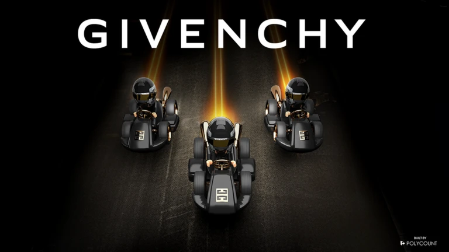
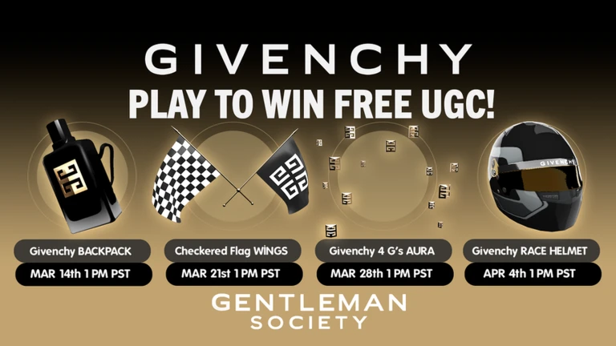
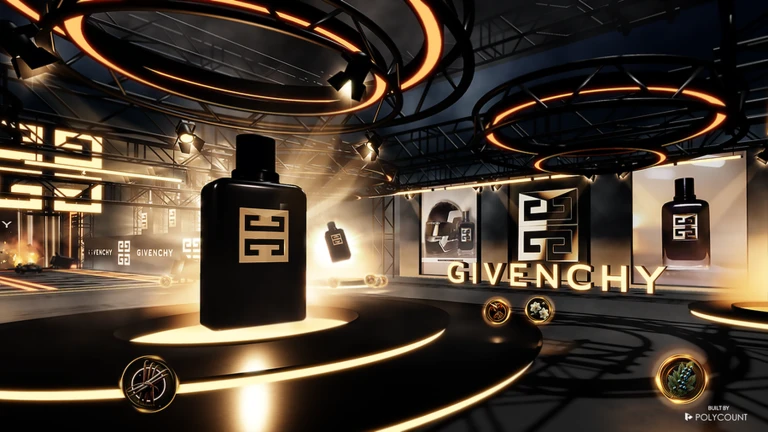

Overview
Project summary
I led programming and studio development, reusing the LANCÔME IDÔLE HOUSE framework while adding new features for this second Rewarded Playables release.

Lead Developer
Rewarded Playables release with racing gameplay, ingredient collection, an infinitely generating track, scoring, and car customization support.
Overview
I led programming and studio development, reusing the LANCÔME IDÔLE HOUSE framework while adding new features for this second Rewarded Playables release.
Systems
Created gameplay where players collect ingredients to fuel a car and race for score.
Built or supported an infinitely generating race track for ongoing runs and high-score attempts.
Supported unlockable flame customization for cars within the constraints of the release.
Extended the first Rewarded Playables framework into a new branded gameplay format.
Media
Media example from Givenchy Gentleman Society.

Media example from Givenchy Gentleman Society.

Media example from Givenchy Gentleman Society.